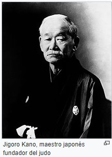

Camino de la flexibilidad

El judo es una de las artes marciales preferidas de los niños. Desarrollan sus capacidades físicas y psíquicas y mejoran su estado de forma al mismo tiempo que aprenden valores tan importantes como el compañerismo o el respeto hacia los demás.
Aunque el judo puede tener algunas desventajas como la posibilidad de que los niños sufran alguna lesión o lleven lo aprendido más allá de las clases, lo cierto es que los beneficios del Judo para niños son innumerables.